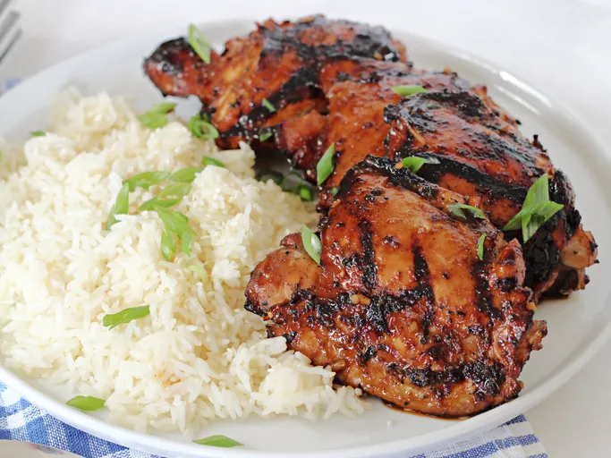

Shoyu Chicken

Shoyu Chicken is a popular hawaiian dish often served with rice. The word shoyu is japanese for soy sauce. Let the chicken soak in the marinade for at least an hour; the longer the better.
Ingredients
- 1 Cup soy sauce
- 1 cup brown sugar
- 1 cup water
- 1 onion, chopped
- 4 cloves garlic, minced
- 1 tablespoon grated fresh ginger root
- 1 tablespoon ground black pepper
- 1 tablespoon dried oregano
- 1 teaspoon crushed red pepper flakes(optional)